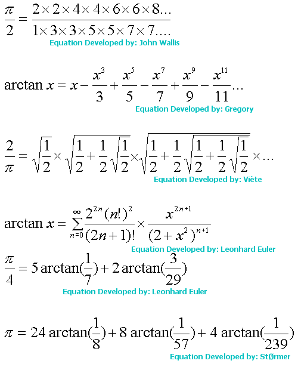

Equations
Here are some of the most famous
equations developed.
Under the equations I have some
things to try and help you understanded them.

Notes:
arctan is a term used in trigonometry, it means
- "the angle, measured in radians, that has a tangent equal to a given
number"
The equation developed by Viete was the first
ever equation to describe pi by an infinite product.
Stormer is a Danish man, who developed a method
to calculate pi, which Shanks and Wrench used to become the first ever
people to calculate pi to
100,001 digits on an IBM 7090